Vectorized Operations in NumPy
Vectorization NumPy ka wo superpower hai jisse aap bina kisi explicit Python for ya while loop ke poore array par ek saath operations perform kar sakte hain. Is lesson mein hum seekhenge ki kaise simple mathematical expressions jaise marks + 5 C-level SIMD instructions ke through parallelly execute hote hain, kaise Boolean masks aur np.where() conditional filtering ko express banate hain, aur kaise vectorization aur broadcasting aapas mein seamlessly integrate hote hain!
00🎯 Learning Objectives
Is comprehensive lesson ko padhne ke baad aap in core topics mein master ho jayenge:
- Vectorization in Simple Words: Samajhna ki vectorization kya hai aur ye traditional Python loops se fundamentally kaise alag hai.
- Element-Wise Arithmetic: Arrays ke beech addition, subtraction, multiplication, division, modulo, aur power operations ko naturally perform karna.
- Element-Wise (*) vs Matrix Multiplication (@): Dono ke difference ko deeply samajhna aur common linear algebra misconceptions se bachna.
- Vectorization with Broadcasting: 1D aur 2D arrays ke saath mathematical transformations ko combine karna.
- Vectorized Comparisons & Boolean Masks: Comparison operators (
>,<,>=,==) se Boolean arrays generate karke data filter karna. - Conditional Logic with np.where(): Vectorized if-else conditions bina explicit looping ke apply karna.
- Universal Functions (ufuncs):
np.sum(),np.mean(),np.sqrt(),np.abs(),np.maximum(), aurnp.clip()ka practical usage. - Real-World Transformations: Student scores, retail product revenue, Celsius-to-Fahrenheit conversion, employee increments, aur IoT sensor calibrations.
- Performance Benchmarking Fairly: Samajhna ki vectorization kab 15x–30x fast hota hai aur kab Python loop hi best choice hota hai.
- Common Pitfalls & Debugging: Ambiguous truth value error (
andvs&), view mutations, integer overflow, aurnp.vectorize()misconceptions.
01💡 Opening Hook — The Problem Vectorization Solves
Maan lijiye ek batch ke 5 students ke exams mein marks kuch is tarah aaye hain:
- marks = [45, 60, 72, 88, 95]
Class teacher ne notice kiya ki paper tough tha, isliye har student ko 5 grace marks dene ka decision liya gaya. Agar hum standard pure Python mein ye task karein, toh hume ek empty list banakar for loop chalana padega:
# Traditional Python loop approach
marks = [45, 60, 72, 88, 95]
updated_marks = []
for mark in marks:
updated_marks.append(mark + 5)
print("Loop Result:", updated_marks)Loop Result: [50, 65, 77, 93, 100]
Ab dekhte hain wahi same task NumPy ke Vectorized Operation se kaise hota hai:
import numpy as np
# NumPy Vectorized approach
marks = np.array([45, 60, 72, 88, 95])
updated_marks = marks + 5 # Vectorized element-wise addition!
print("NumPy Result:", updated_marks)
print("Array Shape:", updated_marks.shape)NumPy Result: [ 50 65 77 93 100] Array Shape: (5,)
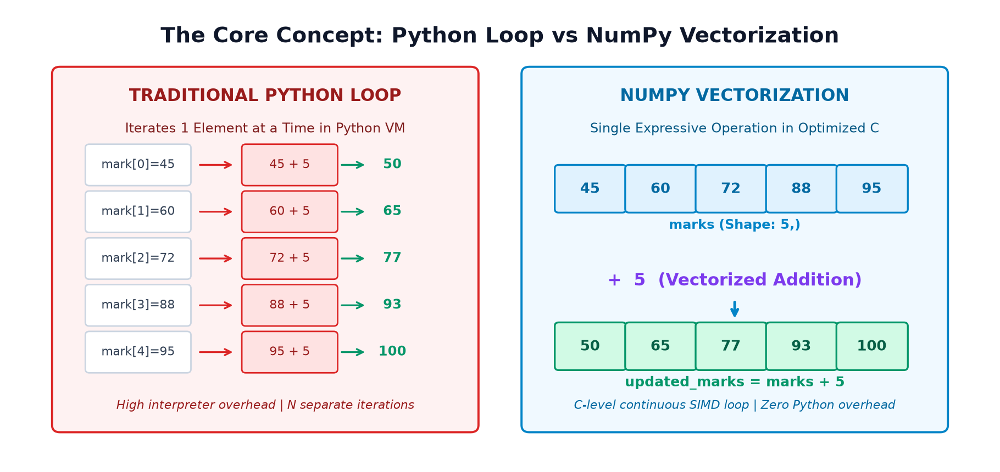
for loop hai, na koi temporary empty list, aur na hi bar-bar .append() call karna pada. Ye readable bhi hai aur ultra-fast bhi!
02📖 Section A — What is Vectorization?
Vectorization ka simple matlab hota hai: "Python mein explicit loop likhe bina, poore array par ek batch operation express karna."
Jab aap Python list ke saath [1, 2, 3] + 5 likhte hain, toh Python crash ho jata hai (TypeError: can only concatenate list to list). Kyunki standard Python lists mathematical vectors nahi hain balki generic object containers hain.
Lekin NumPy ke arrays (ndarray) C-language ke contiguous memory blocks hote hain jinki homogeneous data type (dtype) hoti hai. Is wajah se NumPy aapke likhe simple code marks + 5 ko CPU ke native vector instructions (SIMD — Single Instruction, Multiple Data) mein translate kar deta hai!
- Vectorization: Ye computation mechanism hai — elements par parallel/element-wise operate karna bina Python loop ke.
- Broadcasting: Ye shape compatibility rules hain — jo decide karti hain ki different shapes wale arrays aapas mein kaise align honge.
- Dono milkar kaam karte hain: Broadcasting shapes ko match karwata hai aur Vectorization actual calculation execute karta hai!
Example 1: Adding Grace Bonus to Array
import numpy as np
scores = np.array([52, 67, 74, 81, 90])
bonus_scores = scores + 3
print("Original Scores:", scores)
print("Scores with Bonus:", bonus_scores)Original Scores: [52 67 74 81 90] Scores with Bonus: [55 70 77 84 93]
Example 2: Celsius to Fahrenheit Conversion Formula
Physics aur meteorology mein temperature conversion formula hota hai: F = (C * 9/5) + 32. Vectorization se ye pure array par ek single mathematical equation ki tarah apply hota hai:
import numpy as np
celsius = np.array([0, 20, 35, 42, 100])
fahrenheit = celsius * 9 / 5 + 32
print("Celsius Temps:", celsius)
print("Fahrenheit Temps:", fahrenheit)Celsius Temps: [ 0 20 35 42 100] Fahrenheit Temps: [ 32. 68. 95. 107.6 212. ]
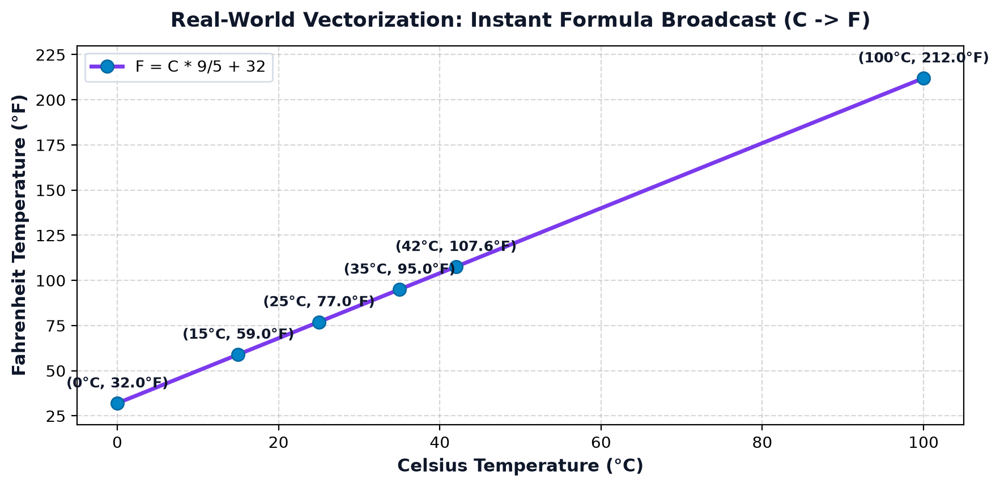
03➕ Section B — Element-Wise Arithmetic Operations
NumPy ke saare standard mathematical operators do arrays ke identical indices wale elements par aapas mein independently apply hote hain:
| Operator | Operation Name | Example (a = [10, 20], b = [2, 4]) | Output Array |
|---|---|---|---|
+ |
Addition | a + b |
[12, 24] |
- |
Subtraction | a - b |
[8, 16] |
* |
Element-wise Multiplication | a * b |
[20, 80] |
/ |
Floating-point Division | a / b |
[5.0, 5.0] |
// |
Floor Division (Integer quotient) | a // b |
[5, 5] |
% |
Modulo (Remainder) | a % b |
[0, 0] |
** |
Exponentiation (Power) | a ** b |
[100, 160000] |
Example 1: Combining Morning & Evening Shop Sales
import numpy as np
morning_sales = np.array([100, 200, 150])
evening_sales = np.array([120, 180, 170])
total_sales = morning_sales + evening_sales
print("Daily Total per Item:", total_sales)Daily Total per Item: [220 380 320]
Example 2: Product Revenue (Price * Quantity) and Grand Total
import numpy as np
prices = np.array([100, 250, 500])
quantities = np.array([2, 3, 1])
revenue = prices * quantities # Element-wise: [100*2, 250*3, 500*1]
grand_total = np.sum(revenue)
print("Revenue per Product:", revenue)
print("Total Revenue in ₹:", grand_total)Revenue per Product: [200 750 500] Total Revenue in ₹: 1450
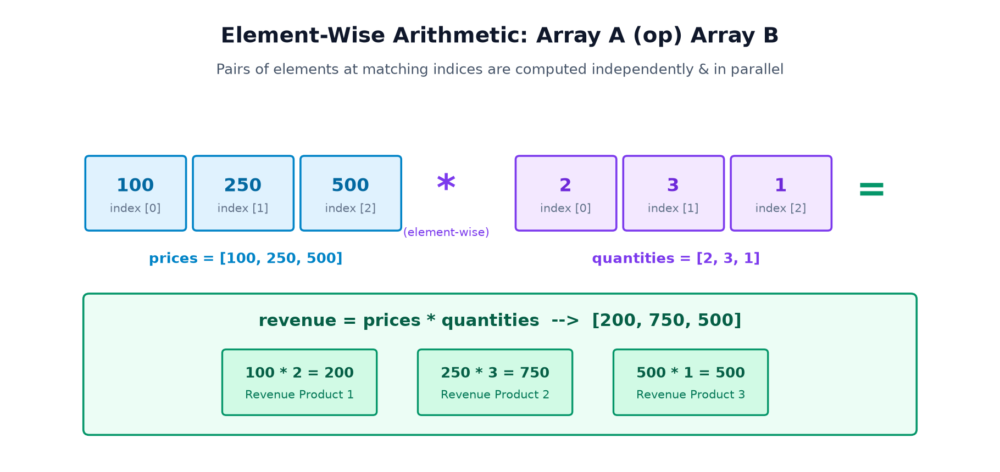
Beginners aksar
* aur @ mein confuse ho jate hain:
A * Bkarta hai Hadamard (element-by-element) multiplication:result[i, j] = A[i, j] * B[i, j]. Dono arrays ki shapes compatible honi chahiye.A @ Byanp.dot(A, B)karta hai Matrix Dot Product (Row-by-Column dot products). Isme A ke columns B ki rows ke barabar hone chahiye.
04🔄 Section C — Vectorization with Broadcasting
Jab do arrays ki exact same shape na ho, tab NumPy Topic 8 ke Broadcasting Rules automatically trigger ho jate hain. Vectorization un broadcasted dimensions ke across fast execution karta hai.
Example 1: Adding a Scalar to a 2D Matrix
import numpy as np
sales = np.array([
[100, 200, 300],
[150, 250, 350]
])
adjusted_sales = sales + 10
print("Adjusted Matrix:
", adjusted_sales)
print("Output Shape:", adjusted_sales.shape)Adjusted Matrix: [[110 210 310] [160 260 360]] Output Shape: (2, 3)
Example 2: Adding Subject-Wise Grace Marks to Student Matrix
import numpy as np
# 2 Students x 3 Subjects
marks = np.array([
[60, 70, 80],
[75, 85, 90]
])
# 1D bonus for [Maths +2, Physics +3, Chemistry +5]
subject_bonus = np.array([2, 3, 5])
updated_marks = marks + subject_bonus
print("Updated Marks Matrix:
", updated_marks)Updated Marks Matrix: [[62 73 85] [77 88 95]]
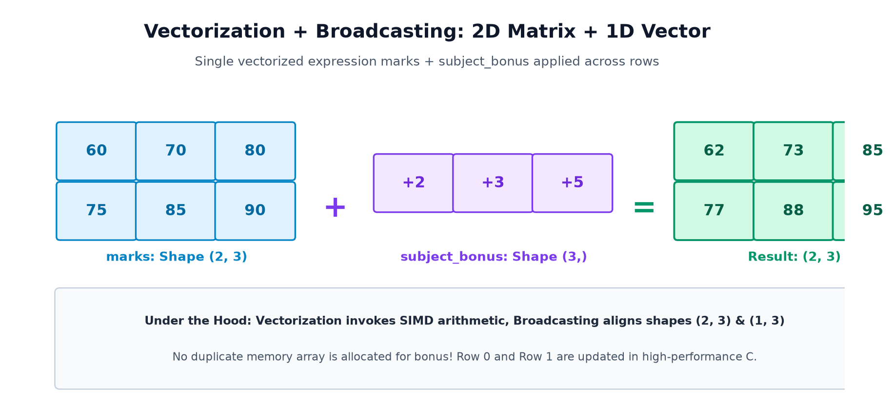
Example 3: Handling Incompatible Shapes Safely with try/except
import numpy as np
marks = np.zeros((2, 3))
invalid_vec = np.array([2, 3]) # Shape (2,) cannot align with trailing dimension 3!
try:
result = marks + invalid_vec
except ValueError as e:
print("Caught Expected ValueError:", e)
# Correct Fix: Reshape to column vector (2, 1)
correct_col = invalid_vec.reshape(2, 1)
fixed_res = marks + correct_col
print("Fixed Output Shape:", fixed_res.shape)Caught Expected ValueError: operands could not be broadcast together with shapes (2,3) (2,) Fixed Output Shape: (2, 3)
05🔍 Section D — Vectorized Comparisons & Boolean Arrays
NumPy mein jab aap comparison operators (>, <, >=, <=, ==, !=) use karte hain, toh wo ek single Boolean nahi dete balki har element ke liye True/False ka ek pura Boolean Array return karte hain!
Example 1: Filtering Passing Marks with Boolean Mask
import numpy as np
marks = np.array([32, 45, 28, 76, 90])
# Vectorized condition evaluates to a Boolean mask
passed = marks >= 33
passing_marks = marks[passed] # Boolean indexing!
print("Boolean Mask:", passed)
print("Filtered Passing Marks:", passing_marks)Boolean Mask: [False True False True True] Filtered Passing Marks: [45 76 90]
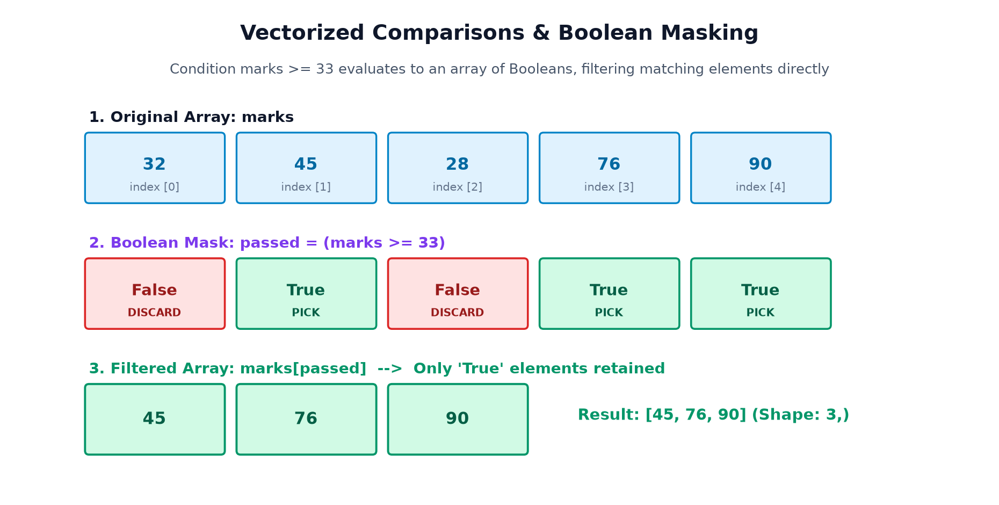
Example 2: Combining Multiple Conditions (& and |)
NumPy mein multiple conditions jodne ke liye bitwise & (AND) aur | (OR) ka use kiya jata hai. Har comparison ko parentheses () mein wrap karna zaroori hai!
import numpy as np
marks = np.array([32, 45, 28, 76, 90])
# Find marks between 40 and 80 inclusive
first_division_zone = (marks >= 40) & (marks <= 80)
print("Zone Mask:", first_division_zone)
print("Students in Zone:", marks[first_division_zone])
print("Is ANY student failed (< 33)?:", np.any(marks < 33))
print("Are ALL students positive (>= 0)?:", np.all(marks >= 0))Zone Mask: [False True False True False] Students in Zone: [45 76] Is ANY student failed (< 33)?: True Are ALL students positive (>= 0)?: True
Agar aap likhenge if marks >= 33: ya (marks >= 33) and (marks <= 80), toh Python error raise karega:
ValueError: The truth value of an array with more than one element is ambiguous. Use a.any() or a.all()
Kyu hota hai? Python ka keyword and pure object ko single boolean treat karta hai, jabki array mein multiple True/False values hain! Hamesha & aur | use karein!
06🎯 Section E — Conditional Operations with np.where()
np.where(condition, x, y) NumPy ka vectorized if-else ternary operator hai.
- Agar condition True hai, toh ye
xse value leta hai. - Agar condition False hai, toh ye
yse value leta hai.
Example 1: Assigning "Pass" or "Fail" Labels
import numpy as np
marks = np.array([25, 40, 32, 80, 55])
labels = np.where(marks >= 33, "Pass", "Fail")
print("Marks:", marks)
print("Result Labels:", labels)Marks: [25 40 32 80 55] Result Labels: ['Fail' 'Pass' 'Fail' 'Pass' 'Pass']
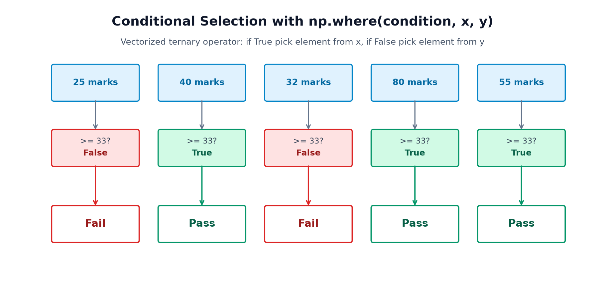
Example 2: 10% Discount on Expensive Products (>= ₹500)
import numpy as np
prices = np.array([100, 250, 600, 900])
# If price >= 500 give 10% off (price * 0.9), else retain original price
final_prices = np.where(prices >= 500, prices * 0.9, prices)
print("Original Prices:", prices)
print("Discounted Final Prices:", final_prices)Original Prices: [100 250 600 900] Discounted Final Prices: [100. 250. 540. 810.]
07📐 Section F — Vectorized Mathematical Functions (ufuncs)
NumPy mein built-in functions ko Universal Functions (ufuncs) kaha jata hai. Ye C-level optimized routines hoti hain jo har element par apply hoti hain:
| Function | Description | Example Input | Output |
|---|---|---|---|
np.sum(a) |
Array ke sabhi elements ka grand sum calculate karta hai. | [10, 20, 30] |
60 |
np.mean(a) |
Arithmetic average (mean) nikalta hai. | [10, 20, 30] |
20.0 |
np.min(a), np.max(a) |
Minimum aur maximum value return karta hai. | [12, 5, 88] |
min=5, max=88 |
np.sqrt(a) |
Har element ka square root nikalta hai. | [4, 16, 25] |
[2.0, 4.0, 5.0] |
np.abs(a) |
Absolute positive magnitude return karta hai. | [-5, 3.2, -8] |
[5.0, 3.2, 8.0] |
np.round(a, dec) |
Specified decimal places par round-off karta hai. | [3.1415, 2.718] |
[3.14, 2.72] |
np.maximum(a, b) |
Do arrays ke beech element-wise max compare karta hai. | [10, 50], [25, 20] |
[25, 50] |
np.clip(a, min, max) |
Values ko strictly boundary range ke andar restrict karta hai. | [-5, 45, 110], 0, 100 |
[0, 45, 100] |
Example 1: Statistical Summary of Exam Scores
import numpy as np
marks = np.array([65, 78, 82, 90, 55])
print("Total Marks:", np.sum(marks))
print("Class Average:", np.mean(marks))
print("Lowest Score:", np.min(marks))
print("Highest Score:", np.max(marks))Total Marks: 370 Class Average: 74.0 Lowest Score: 55 Highest Score: 90
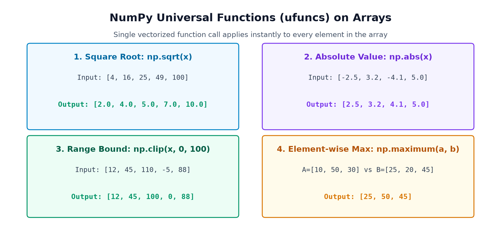
08🌍 Section G — Vectorized Transformations of Real-World Data
Data analysis, business analytics, aur machine learning mein real-world datasets ko transform karne ke liye vectorization sabse powerful tool hai. Aaiye iske 4 major use cases dekhein:
1. Retail Business: Profit Calculation per Product
Selling price se cost price subtract karke units sold se multiply karke grand profit nikalna:
import numpy as np
selling_prices = np.array([120, 250, 400])
costs = np.array([80, 180, 290])
units_sold = np.array([50, 30, 20])
unit_profit = selling_prices - costs # [40, 70, 110]
total_profit = np.sum(unit_profit * units_sold)
print("Profit per Unit:", unit_profit)
print("Total Net Profit in ₹:", total_profit)Profit per Unit: [ 40 70 110] Total Net Profit in ₹: 6300
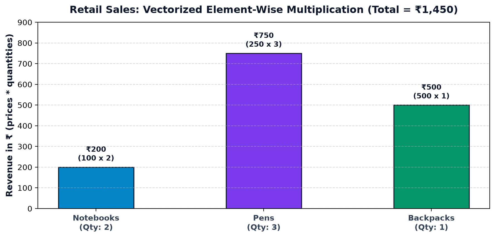
2. Human Resources: Tier-Based Salary Increments
Junior employees (< ₹50,000) ko 10% increment aur senior employees (>= ₹50,000) ko 5% increment dena:
import numpy as np
salaries = np.array([35000, 48000, 65000, 90000])
updated_salaries = np.where(salaries < 50000, salaries * 1.10, salaries * 1.05)
print("Base Salaries:", salaries)
print("Updated Salaries:", updated_salaries)Base Salaries: [35000 48000 65000 90000] Updated Salaries: [38500. 52800. 68250. 94500.]
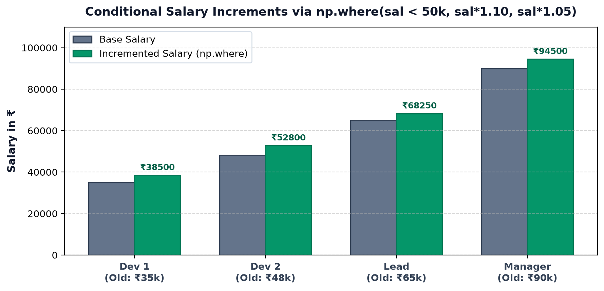
3. IoT Sensor Calibration: Drift Offset Correction
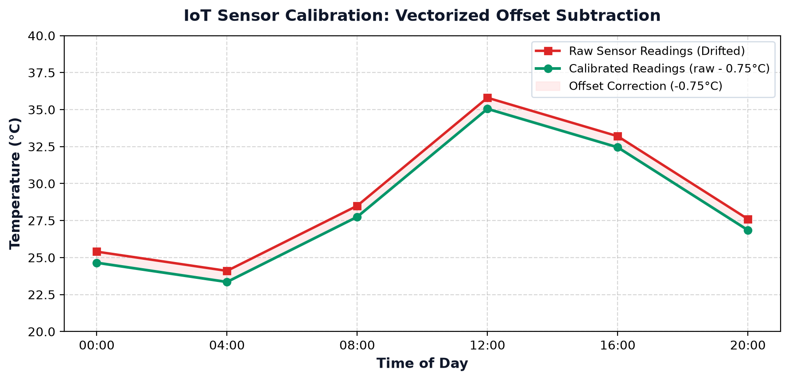
4. Machine Learning: Min-Max Feature Scaling
Data science algorithms mein features ko 0 se 1 ke scale par normalize karna:
import numpy as np
features = np.array([10.0, 25.0, 50.0, 75.0, 100.0])
normalized = (features - np.min(features)) / (np.max(features) - np.min(features))
print("Normalized 0-1 Features:
", np.round(normalized, 3))Normalized 0-1 Features: [0. 0.167 0.444 0.722 1. ]
09⚡ Section H — Vectorization versus Python Loops & Benchmark
Bohot se students puchte hain: "Sir, NumPy ka code itna tez kyu chalta hai jabki background mein bhi toh loop hi ghoom raha hota hai?"
Difference ye hai ki Python for-loop Python Virtual Machine (bytecode interpreter) mein execute hota hai jisme har step par object type checking, pointer chasing, aur memory allocations hoti hain.
Jabki NumPy Vectorization compiled C code mein execute hota hai. Ye CPU ke SIMD registers use karta hai jo ek single clock cycle mein 4 se 8 numbers ek saath add kar sakte hain!
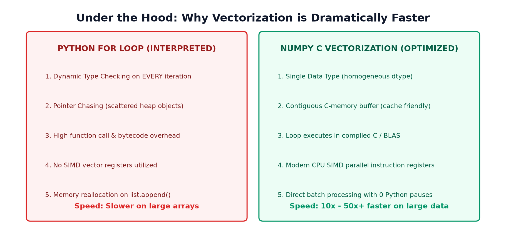
Real Benchmark Execution on 1,000,000 Elements
Humne 10 Lakh (1,000,000) integers par +5 add karne ka performance benchmark test kiya:
import time
import numpy as np
N = 1_000_000
py_list = list(range(N))
np_arr = np.arange(N)
# Python Loop Timing
t0 = time.perf_counter()
loop_out = [x + 5 for x in py_list]
t_loop = (time.perf_counter() - t0) * 1000
# NumPy Vectorization Timing
t0 = time.perf_counter()
vec_out = np_arr + 5
t_vec = (time.perf_counter() - t0) * 1000
print(f"Python Loop Time: {t_loop:.2f} ms")
print(f"NumPy Vectorized Time: {t_vec:.2f} ms")
print(f"Speedup Factor: {t_loop/t_vec:.1f}x Faster!")Python Loop Time: 33.97 ms NumPy Vectorized Time: 1.86 ms Speedup Factor: 18.3x Faster!
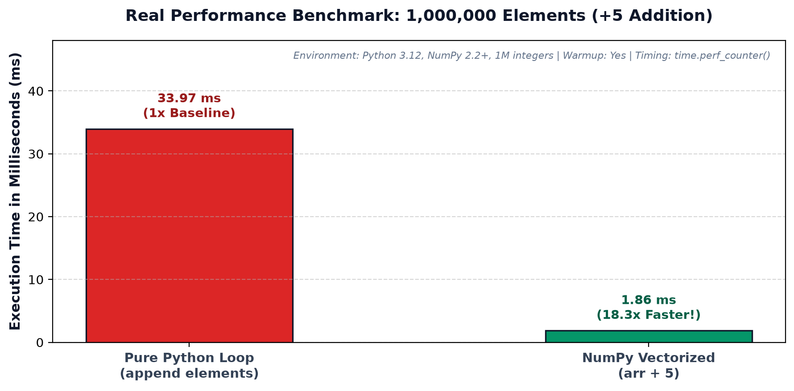
Har jagah vectorization zaroori nahi hota! Python loops tab zaroori hote hain jab: (1) Har step previous step ke dynamic output par depend kare (jaise Fibonacci series ya complex state machines), (2) Tree traversal ya dynamic graph algorithms ho, (3) Non-numerical objects (strings, custom API network calls) ko iterate karna ho.
10🛠️ Section I — Common Pitfalls & Debugging
Buggy Code: [10, 20] + [5, 5]
Actual Result: [10, 20, 5, 5] (List concatenation, not mathematical addition!)
Correct Fix: Arrays banayein: np.array([10, 20]) + np.array([5, 5]) → [15, 25].
Buggy Code: arr > 10 & arr < 50
Issue: Python mein bitwise & ki precedence > aur < se zyada hoti hai! Isliye ye 10 & arr pehle evaluate karta hai!
Correct Fix: Hamesha parentheses lagayein: (arr > 10) & (arr < 50).
Misconception: Student sochte hain ki np.vectorize(my_py_func) likhne se unka custom Python function C-level ufunc ban jayega!
Reality: np.vectorize() sirf ek convenient for loop wrapper hai. Ye convenience ke liye accha hai, par performance speedup nahi deta! Maximum speed ke liye pure NumPy ufuncs use karein.
Issue: Agar array int8 hai (range -128 to 127) aur aapne 100 + 50 kar diya, toh result 150 nahi balki wrap-around hokar -106 ban jayega!
Correct Fix: Always use appropriate dtype like int32, int64, ya float64.
11🧭 Section J — The Decision Flowchart
Kaunsa tool kab select karein? Is visual decision tree ko follow karein:
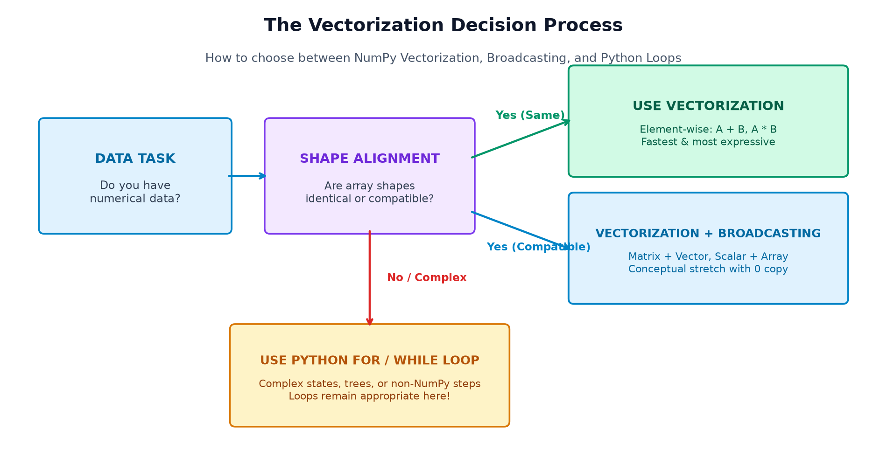
12📝 Section K — Practice Questions & Interactive Solutions
In questions ko pehle khud solve karne ki koshish karein, phir solution verify karein:
Part A — 10 Output-Prediction Questions
Q1: np.array([10, 20, 30]) + 5 ka output kya hoga?
[15 25 35]Reason: Scalar 5 array ke har element par add ho jata hai.
Q2: np.array([2, 4, 6]) * np.array([3, 2, 1]) ka output kya hoga?
[6 8 6]Reason: Element-wise multiplication: 2*3, 4*2, 6*1.
Q3: np.array([10, 20, 30]) > 15 ka output kya hoga?
[False True True]Reason: Comparison array of Booleans return karta hai.
Q4: a = np.array([10, 25, 40]); print(a[a > 20]) ka output?
[25 40]Reason: Boolean mask sirf un elements ko filter karta hai jaha True hota hai.
Q5: np.where(np.array([10, 50, 20]) > 25, 100, 0) ka output?
[ 0 100 0]Reason: Index 1 par condition True hai (50 > 25), baaki par False.
Q6: np.clip(np.array([5, 45, 120, -10]), 0, 100) ka output?
[ 5 45 100 0]Reason: 120 clip hokar 100 ban gaya aur -10 clip hokar 0 ban gaya.
Q7: np.maximum(np.array([10, 40]), np.array([25, 30])) ka output?
[25 40]Reason: Element-wise maximum: max(10, 25)=25, max(40, 30)=40.
Q8: np.any(np.array([False, False, True])) ka output?
TrueReason: Array mein kam se kam ek value True hai.
Q9: np.all(np.array([10, 20, 0]) > 0) ka output?
FalseReason: 0 > 0 False hota hai, isliye all True nahi hai.
Q10: np.array([[1, 2], [3, 4]]) + np.array([10, 20]) ka output shape?
(2, 2) with values [[11, 22], [13, 24]].Reason: (1, 2) row vector (2, 2) matrix ki dono rows par broadcast hota hai.
Part B — 8 Verified Coding Exercises
Exercise 1: Calculate 15% discount on an array of prices
import numpy as np
prices = np.array([200, 450, 800, 1200])
final_prices = prices * 0.85
print(final_prices) # [ 170. 382.5 680. 1020. ]Exercise 2: Filter elements strictly greater than 75
scores = np.array([55, 88, 42, 91, 76, 33])
high_scores = scores[scores > 75]
print(high_scores) # [88 91 76]Exercise 3: Label marks >= 60 as 'First Division', else 'Other'
marks = np.array([30, 45, 60, 75, 90])
divisions = np.where(marks >= 60, "First Division", "Other")
print(divisions)Exercise 4: Restrict noisy sensor values strictly between 0 and 100
sensors = np.array([-15, 20, 85, 140, 50])
clean = np.clip(sensors, 0, 100)
print(clean) # [ 0 20 85 100 50]Exercise 5: Calculate column-wise sum of a 2D matrix
mat = np.array([[10, 20], [30, 40], [50, 60]])
col_sums = np.sum(mat, axis=0)
print(col_sums) # [ 90 120]Exercise 6: Add column vector to a 2D matrix
mat = np.ones((3, 4))
col = np.array([10, 20, 30]).reshape(3, 1)
res = mat + col
print(res.shape) # (3, 4)Exercise 7: Filter numbers that are both EVEN and GREATER than 30
arr = np.array([15, 24, 35, 48, 55, 62])
filtered = arr[(arr % 2 == 0) & (arr > 30)]
print(filtered) # [48 62]Exercise 8: Calculate daily temperature swing (Max - Min)
max_t = np.array([34, 38, 41, 39])
min_t = np.array([22, 25, 27, 24])
swing = max_t - min_t
print(swing) # [12 13 14 15]Part C — Multiple Choice Questions (MCQs)
MCQ 1: NumPy arrays Python lists se tez kyu hote hain?
Explanation: Python lists generic pointers store karti hain jisme high interpreter overhead hota hai.
MCQ 2: Element-wise multiplication ke liye kaunsa operator use hota hai?
*Explanation:
* element-by-element multiply karta hai, jabki @ matrix dot product karta hai.
MCQ 3: Multiple conditions ko NumPy array mein jodne ke liye kya use karte hain?
& aur | with parenthesesExplanation: Python ka
and keyword array par ambiguous error raise karta hai.
MCQ 4: np.where(cond, x, y) kya karta hai?
13🚀 Section L — Final Mini-Project: Smart Student Performance Analyzer
Ab hum Topic 9 ke saare core vectorized concepts — matrix arithmetic, broadcasting, mathematical functions, Boolean masks, aur np.where() — ko combine karke ek practical Student Performance Analyzer pipeline banate hain!
import numpy as np
print("=== SMART STUDENT PERFORMANCE ANALYZER ===")
students = ["Aarav", "Priya", "Rohan", "Ananya"]
subjects = ["Maths", "Science", "English"]
# 4 Students x 3 Subjects Matrix
raw_marks = np.array([
[45, 52, 60],
[78, 85, 92],
[28, 35, 40],
[90, 94, 98]
])
# Step 1: Subject-wise bonus via Broadcasting (Maths +5, Science +3, English +4)
subject_bonus = np.array([5, 3, 4])
bonus_marks = raw_marks + subject_bonus
# Step 2: Restrict marks strictly to valid range (0 - 100) using np.clip
adjusted_marks = np.clip(bonus_marks, 0, 100)
# Step 3: Calculate student totals & averages across subjects (axis=1)
student_totals = np.sum(adjusted_marks, axis=1)
student_averages = np.mean(adjusted_marks, axis=1)
# Step 4: Passing Rule: Average >= 40 AND every individual subject >= 33
subject_pass_all = np.all(adjusted_marks >= 33, axis=1)
overall_pass_mask = (student_averages >= 40.0) & subject_pass_all
# Step 5: Assign final status labels with np.where
student_status = np.where(overall_pass_mask, "Passed", "Needs Improvement")
print("\n1. Adjusted Marks Matrix (0-100 Clipped):\n", adjusted_marks)
print("\n2. Student Totals:", student_totals)
print("3. Student Averages:", np.round(student_averages, 1))
print("\n4. Final Performance Report:")
for i in range(len(students)):
print(f" {students[i]}: Total={student_totals[i]}, Avg={student_averages[i]:.1f} -> {student_status[i]}")=== SMART STUDENT PERFORMANCE ANALYZER === 1. Adjusted Marks Matrix (0-100 Clipped): [[ 50 55 64] [ 83 88 96] [ 33 38 44] [ 95 97 100]] 2. Student Totals: [169 267 115 292] 3. Student Averages: [56.3 89. 38.3 97.3] 4. Final Performance Report: Aarav: Total=169, Avg=56.3 -> Passed Priya: Total=267, Avg=89.0 -> Passed Rohan: Total=115, Avg=38.3 -> Needs Improvement Ananya: Total=292, Avg=97.3 -> Passed
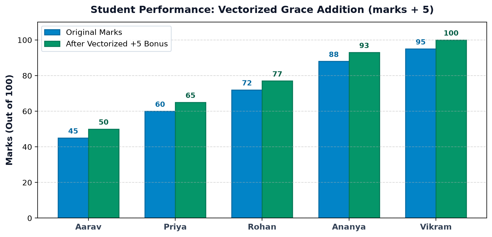
14📑 Section M — Quick Reference Cheat Sheet & Checklist
| Task | Vectorized NumPy Syntax | Underlying Mechanism |
|---|---|---|
| Add scalar to array | arr + 5 |
SIMD broadcast addition |
| Element-wise multiply | a * b |
Hadamard pair multiplication |
| Matrix dot product | a @ b |
BLAS matrix dot product |
| Boolean Filter | arr[arr > 50] |
Boolean masking indexing |
| Combined Conditions | (arr > 10) & (arr < 50) |
Bitwise element-wise logical AND |
| Vectorized If-Else | np.where(c, x, y) |
Ternary element branching |
| Boundary Limiting | np.clip(arr, 0, 100) |
Clamping values to range |
| Check Any / All | np.any(c), np.all(c) |
Fast Boolean reduction |
✅ Topic 9 Mastery Checklist
- ☑ Vectorization ka concept clear hai (no explicit Python loops).
- ☑ Element-wise arithmetic operations (+, -, *, /, //, %, **) aate hain.
- ☑
*aur@ke beech ka difference pata hai. - ☑ Boolean masks aur combined conditions (
&,|) smoothly apply kar sakte hain. - ☑
np.where(cond, x, y)se selective labels aur discounts lagana aata hai. - ☑ Universal math functions (sum, mean, sqrt, abs, clip) master ho chuke hain.
- ☑ Real benchmark par vectorization ki 18x+ speedup samajh aa gayi hai.